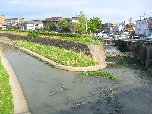
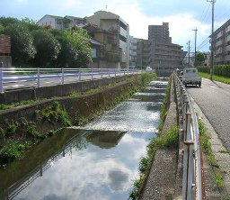

藤ノ木川 (名東区の川)

香流川は東名高速道路のすぐ東で藤ノ木川と合流する。 上写真の左が香流川主流で、右が藤ノ木川である。 藤ノ木川は上流の長久手町では鴨田川とよばれる。

上写真は藤ノ木団地付近である。 香流川には人工とはいえ川原や草むらもあり、水辺の散歩もできるが、 藤ノ木川はすべてがコンクリートで固められ河川敷もなく川辺の情緒がまったくない。
言うなら大きなどぶ川である。
メニュー